شاشة اللعب المعتمدة (B3). سلسلة التصغير: 1 النظام تحت الاسم، 2 الاسم وحده، 3 مؤشرات أضيق، 4 العلم وحده (الاسم في لوحة الدولة وفي قراءة VoiceOver)، 5 السنة بجانب اليوم. لا مشاكل.
المستوى التلقائي على الجوالات السبعة
se · مصر · تلقائي: 4 · العلم وحده · يتسع (624 / 651)mini · مصر · تلقائي: 2 · الاسم وحده · يتسع (684.5 / 712)i14 · مصر · تلقائي: 1 · النظام تحت الاسم · يتسع (740.5 / 750)i16 · مصر · تلقائي: 2 · الاسم وحده · يتسع (684.5 / 734)
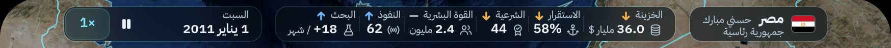
i16pro · مصر · تلقائي: 1 · النظام تحت الاسم · يتسع (740.5 / 750)
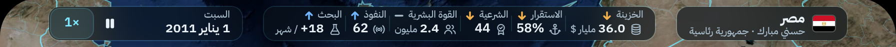
i11 · مصر · تلقائي: 0 · الكامل · يتسع (776.2 / 800)
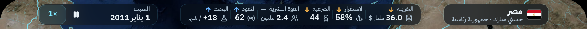
i16promax · مصر · تلقائي: 0 · الكامل · يتسع (776.2 / 832)se · أطول اسم · تلقائي: 4 · العلم وحده · يتسع (624 / 651)mini · أطول اسم · تلقائي: 4 · العلم وحده · يتسع (624 / 712)i14 · أطول اسم · تلقائي: 3 · مؤشرات أضيق · يتسع (740 / 750)
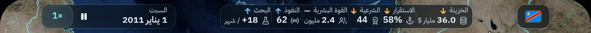
i16 · أطول اسم · تلقائي: 4 · العلم وحده · يتسع (624 / 734)
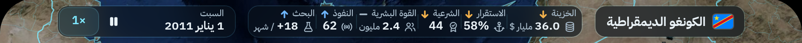
i16pro · أطول اسم · تلقائي: 3 · مؤشرات أضيق · يتسع (740 / 750)i11 · أطول اسم · تلقائي: 0 · الكامل · يتسع (794.4 / 800)
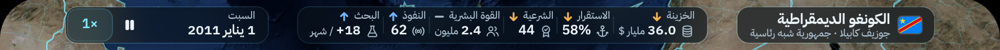
i16promax · أطول اسم · تلقائي: 0 · الكامل · يتسع (794.4 / 832)
كل مستوى مفروضًا على SE وmini بأطول اسم
se · أطول اسم · مفروض: 0 · الكامل · لا يتسع (794.4 / 651) · قصّ: outside the row: dow، outside the row: dmy، outside the row: ltr
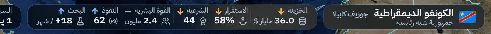
se · أطول اسم · مفروض: 1 · النظام تحت الاسم · لا يتسع (824.6 / 651) · قصّ: outside the row: dow، outside the row: dmy، outside the row: ltrse · أطول اسم · مفروض: 2 · الاسم وحده · لا يتسع (768.5 / 651) · قصّ: outside the row: dow، outside the row: dmy، outside the row: ltrse · أطول اسم · مفروض: 3 · مؤشرات أضيق · لا يتسع (740 / 651) · قصّ: outside the row: dow، outside the row: dmy، outside the row: ltr
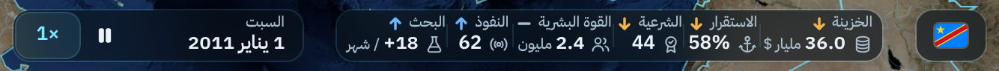
se · أطول اسم · مفروض: 4 · العلم وحده · يتسع (624 / 651)
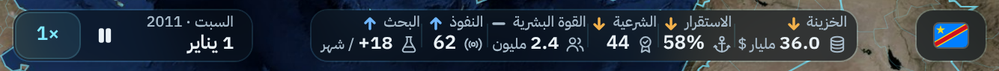
se · أطول اسم · مفروض: 5 · السنة بجانب اليوم · يتسع (590 / 651)
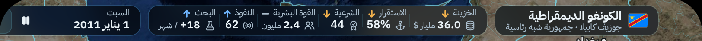
mini · أطول اسم · مفروض: 0 · الكامل · لا يتسع (794.4 / 712) · قصّ: outside the row: ltr
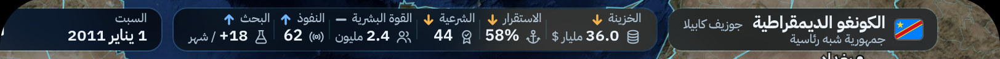
mini · أطول اسم · مفروض: 1 · النظام تحت الاسم · لا يتسع (824.6 / 712) · قصّ: outside the row: dow، outside the row: dmy، outside the row: ltr
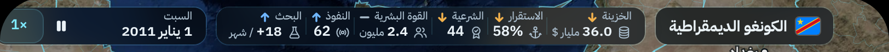
mini · أطول اسم · مفروض: 2 · الاسم وحده · لا يتسع (768.5 / 712) · قصّ: outside the row: ltr
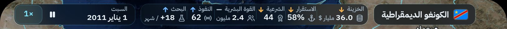
mini · أطول اسم · مفروض: 3 · مؤشرات أضيق · لا يتسع (740 / 712) · قصّ: outside the row: ltrmini · أطول اسم · مفروض: 4 · العلم وحده · يتسع (624 / 712)
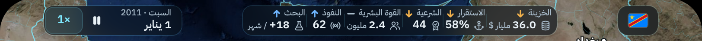
mini · أطول اسم · مفروض: 5 · السنة بجانب اليوم · يتسع (590 / 712)